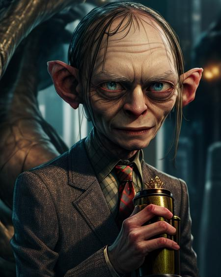

Lupines are flowering plants known for their distinctive tall spikes of colorful, pea-like flowers. They are found in a variety of habitats and are valued for their ornamental qualities in gardens.
Lupines are flowering plants known for their vibrant, spiky blooms. They come in various colors and are often found in gardens and natural settings. Lupines are part of the legume family and can help enrich the soil with nitrogen. Some species are toxic if ingested, so caution is advised.
Pigeons
Pigeons, also known as rock doves, are common birds found in urban and rural areas worldwide. They are characterized by their stout bodies, short necks, and often gray or blue-gray plumage. Pigeons are known for their distinctive cooing sounds and are sometimes kept as pets or used for messenger services in the past.
Pigeons, also known as rock doves, are common birds found worldwide. They have stout bodies, come in various colors, and are known for their cooing sounds. Pigeons are adaptable, living in both urban and rural areas. They primarily eat seeds, form monogamous pairs, and have cultural significance in various societies. While they can carry diseases, they are not endangered and have a lifespan of 3-5 years in the wild.

Gollum is a multifaceted character in "The Lord of the Rings" with a tragic past. His obsession with the One Ring divides his personality into Sméagol (his former self) and Gollum (his darker side).
Gollum is a character from J.R.R. Tolkien's Middle-earth novels. He was once a Hobbit-like creature named Sméagol but became obsessed with the One Ring, which split his personality into Sméagol and Gollum. His inner conflict and obsession with the Ring play a crucial role in both "The Hobbit" and "The Lord of the Rings." Gollum's story ends when he unintentionally destroys the Ring.